DOTween基础方法
DOTween中为我们准备了一些基础的移动或是旋转方法
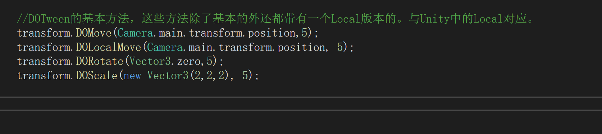这些方法见名知意，只需要传入指定的参数就能运行。
而且每一个移动或是旋转、缩放的对象都有一个对应local方法，用于相对于自身的操作。想要在transform中这样调用方法先需要引入命名空间
using DG.Tweening
引入命名空间后就能直接调用DOTween准备好的一些方法。
物理模拟方法
弹跳模拟
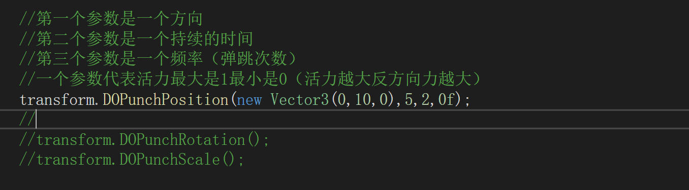运行这个方法可以得到一个弹跳效果
这里的最后一个参数提到了反方向力，可以理解为，当反方向力为0时，物体每次弹起落下的点只会是它弹起时的位置，如果大于0时，那么落下时就会附加一个冲击力让它落下的点超过起跳的点。
震动动画
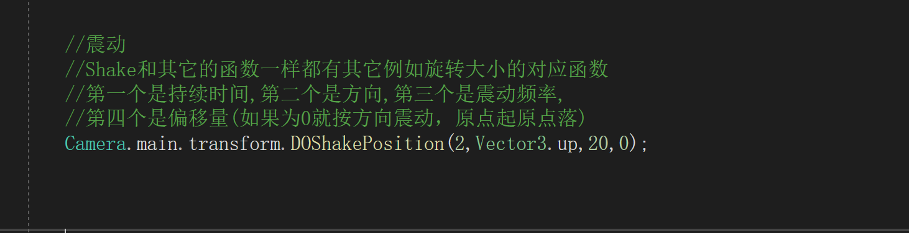混合移动
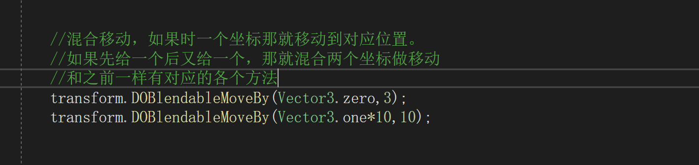改变颜色
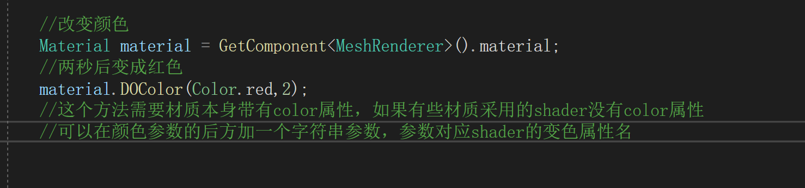透明
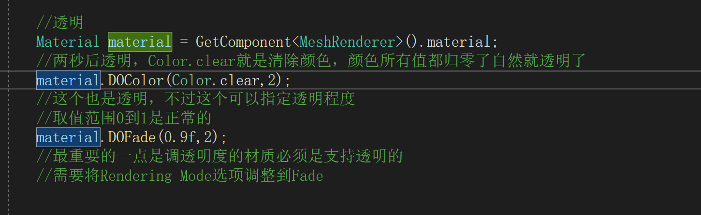渐变颜色
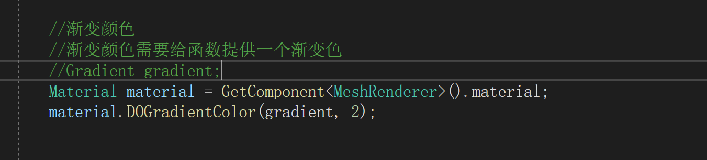变色
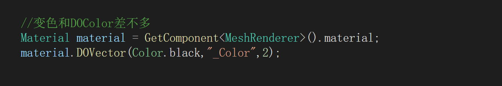混合颜色
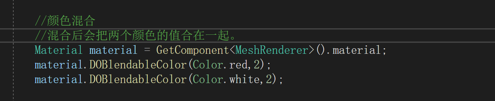摄影机
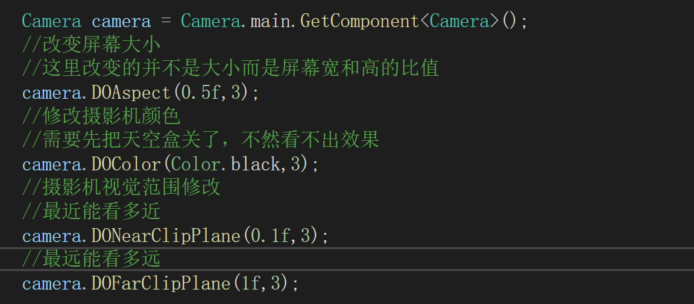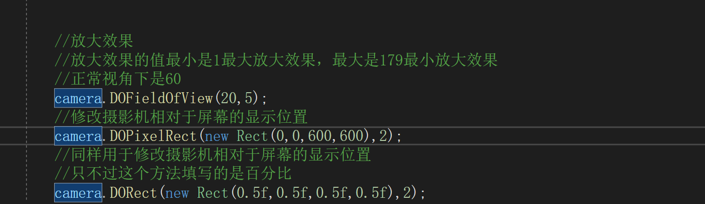
队列
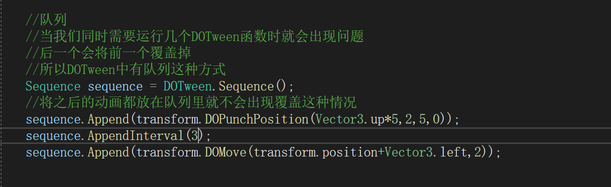sequence.Append方法用来在队列里添加动画
sequence.AppendInterval方法用来在队列里设置等待时间
队列插入动画
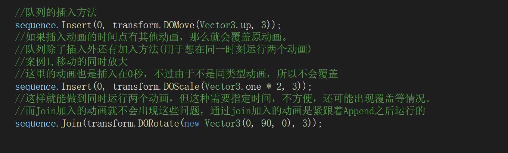插入动画时需要注意动画被覆盖这种问题，需要根据不同的情况使用不同的插入方式
队列倒着执行
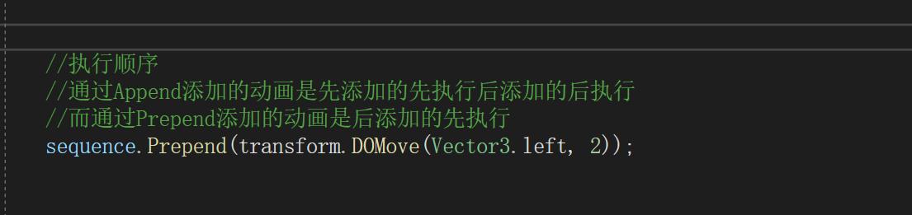通过上图所示的函数，可以让队列中的动画先入后出，最后添加的反而最先执行。
回调函数
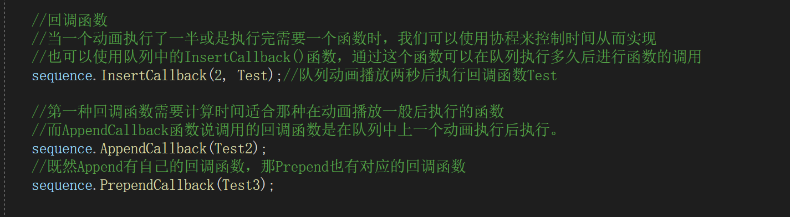这里的几个Test都是函数名，只需要写函数名就行，不用带括号
动画参数
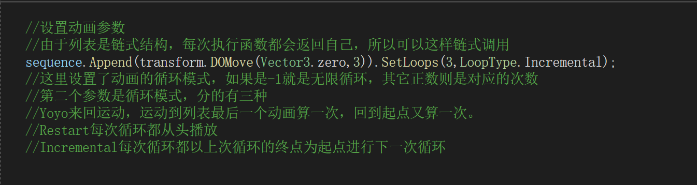From函数
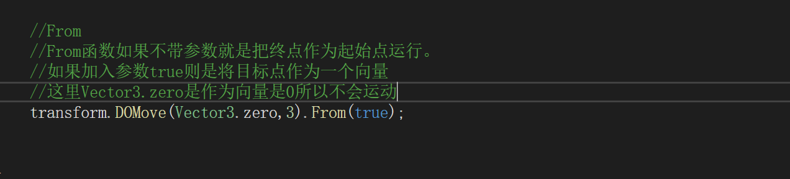这里的from函数如上图所示是有两种用法的
如果没有参数就可以理解成动画倒放,会将终点作为起始点，从终点向起始点运动
如果加上了true则是将目标点作为方向进行运动
除了From外还有SetRelative也能修改运动参数
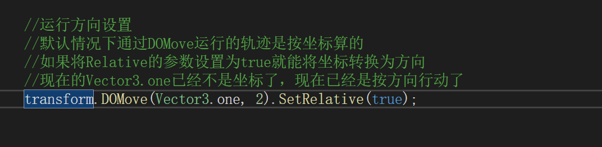延时动画
除了通过插入时间来实现延时外，还可以通过设置参数指定动画延时执行。
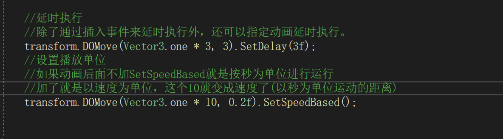动画更新帧
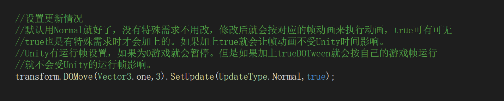动画帧一般使用默认的，没有特殊情况不会改动
路径动画